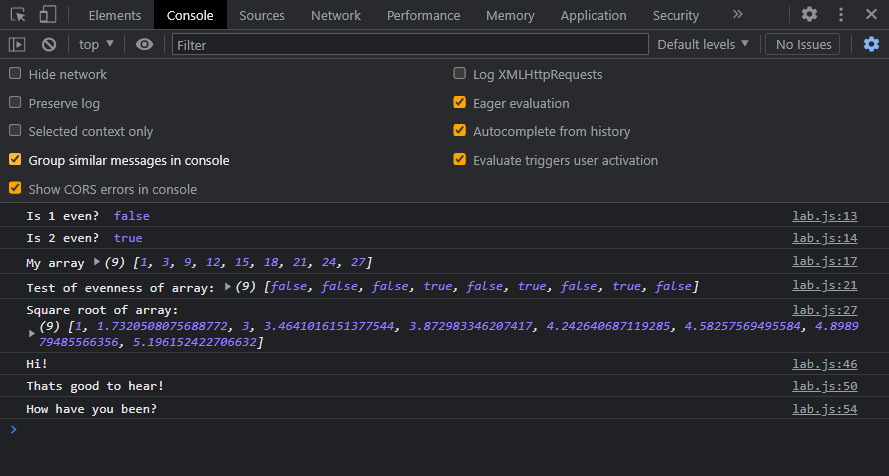

In this lab we learned how about callback functions and anon functions. In the console we experimented with calling back our function isEven() into array.map().
We got a little confused when nothing printed on our document, but after re-reading task 3, we realized our answers lay in the console log. This lab was a little tricky but we figure it out.
1. Output for function:
2. Callbacks are commonly used in arrays, timer functions, promises, and event handlers. For Task X, we decided to create a simple timer function based off of the one from class, to demonstrate another way callbacks can be used. First we created functions called greetme(), uResponse(), and uReponse2() that print messages that the user can read.
Then the function setTimeout() calls those funcitons aftera certain amount of time and automaticallyprints those messages. 